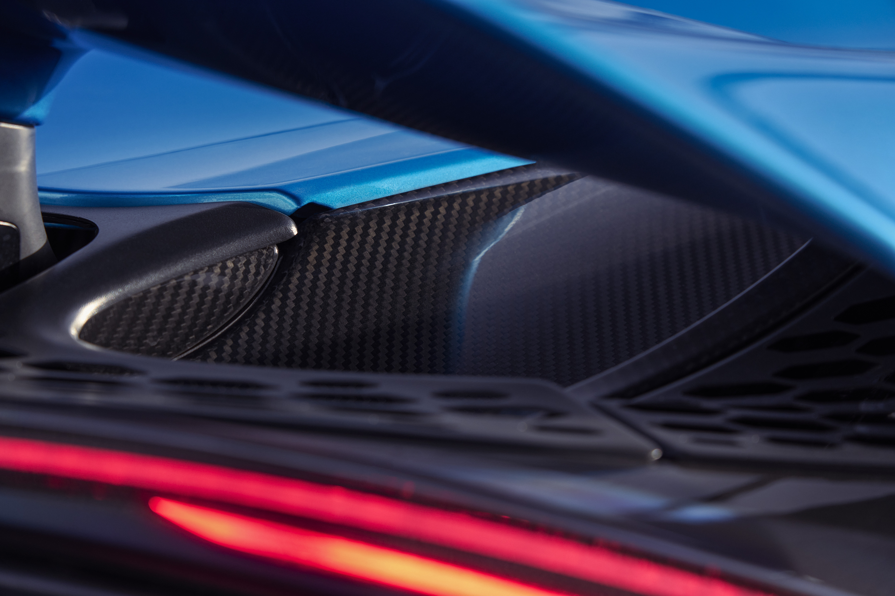
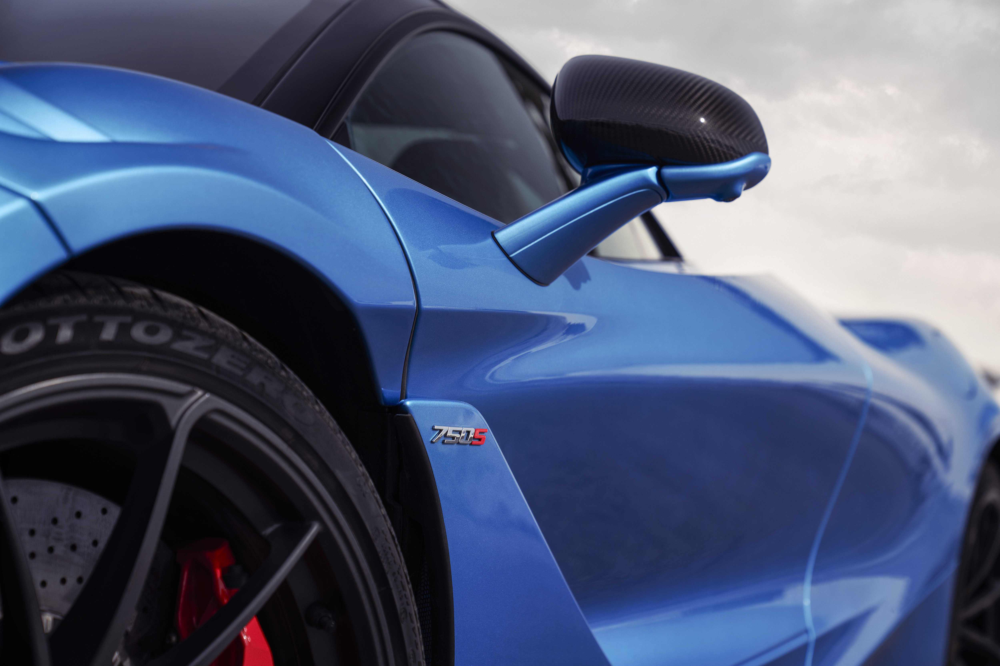
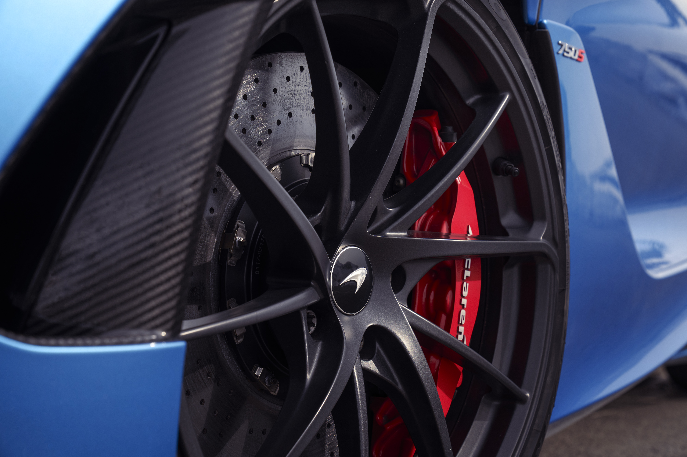
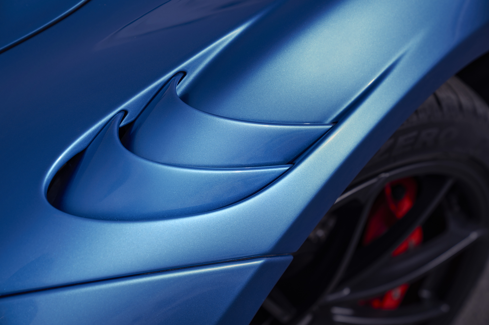
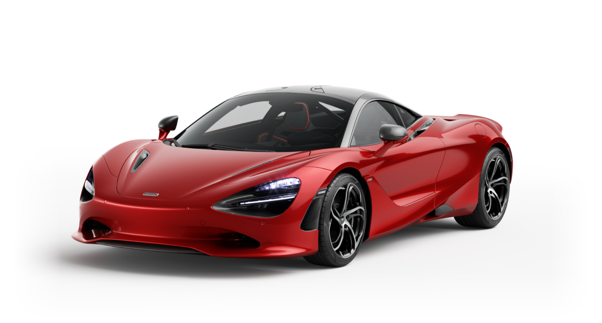
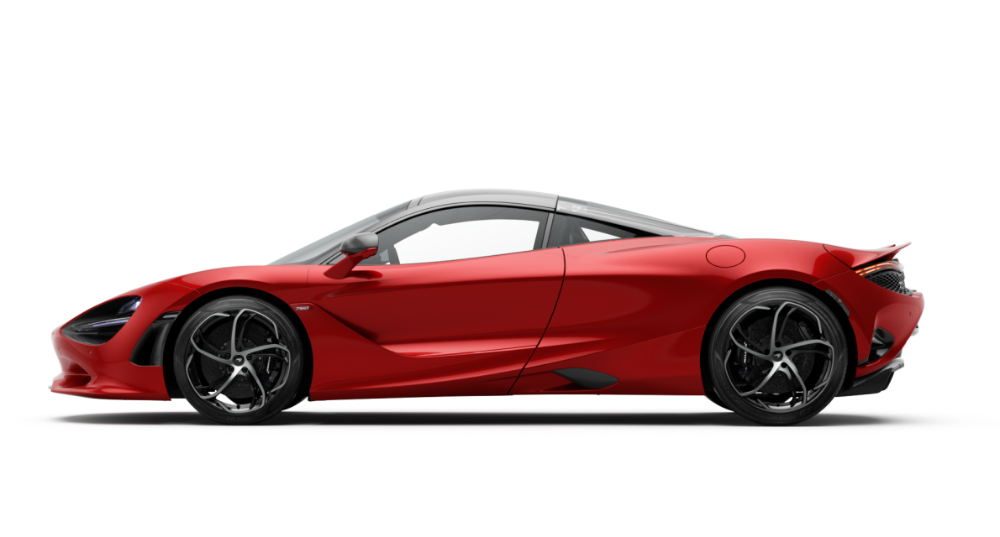
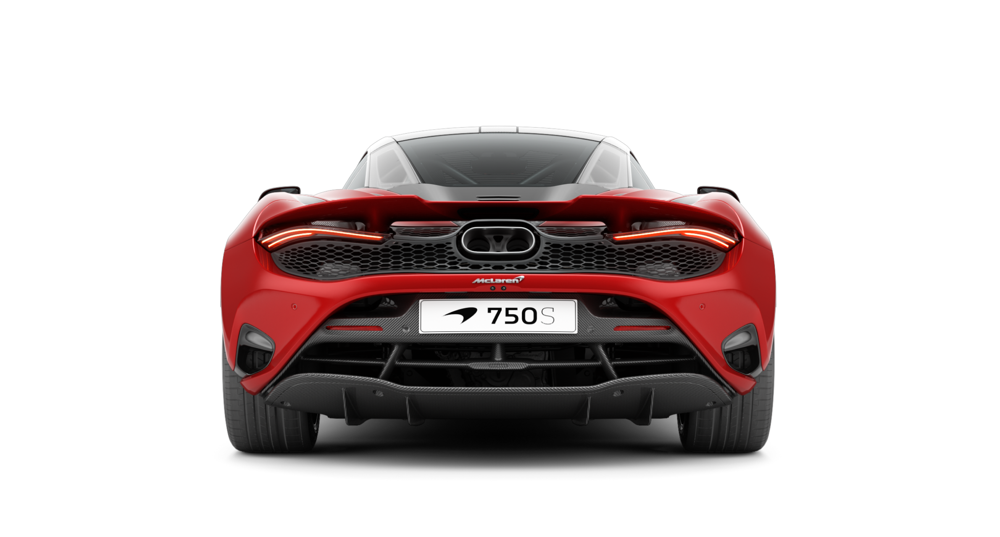
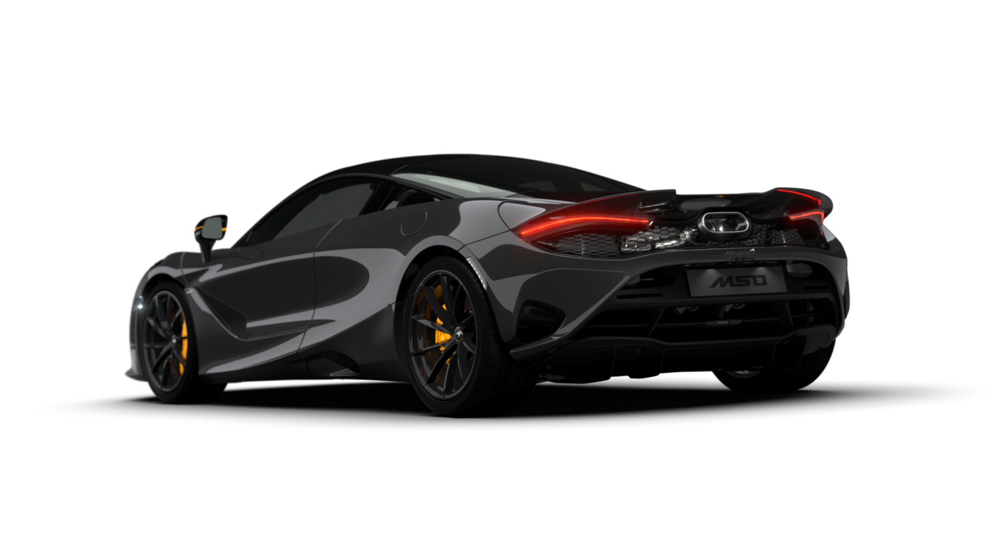
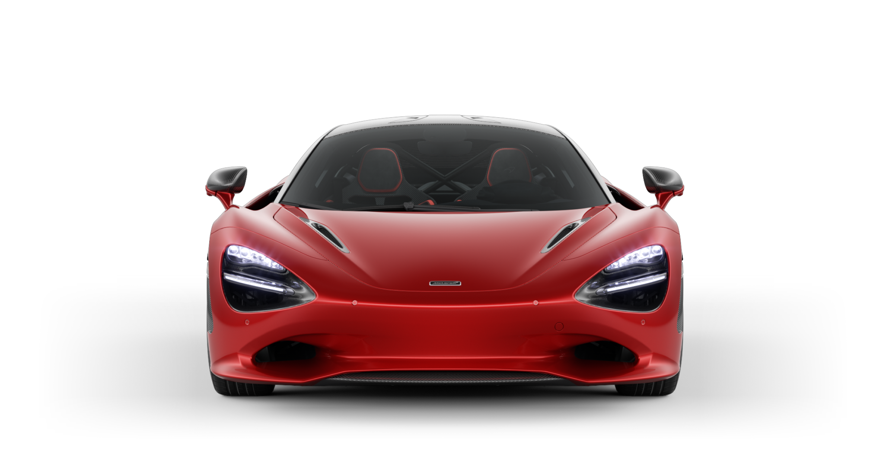

BENCHMARKS EXSITS TO BE BROKEN
Relentless progress. More power. More control. More exhilaration.
The 750S takes the McLaren ethos to a new apex. True to its DNA, it's the next-level supercar. Surpassing the benchmarks for performance, engagement and purity of response.
Defined by the relentless pursuit of lightness. Shaped by an innovation and expertise forged and honed in Formula 1™. The 750S is the living, breathing proof that – at McLaren – progress is never over. Every 1/100th of a second and each millimetre counts. Every limit is tested and surpassed.
The lightest and most powerful series production McLaren supercar ever. Delivering a stunning breadth of abilities that allows no compromise. The latest class-leading supercar from a bloodline with a 60-year history.
"750S is the real. [...] This car is so fast. It's a proper ride. It's an experience. It makes you sweat, it makes your chest heave."
Chris Harris
Collecting Cars
"750S is the real. [...] This car is so fast. It's a proper ride. It's an experience. It makes you sweat, it makes your chest heave."
Chris Harris
Collecting Cars
"McLaren's flagship supercar is now more than just a clinical scalpel that can get you from A to B with maximum efficiency — it's also a raucous, tyre-smoking hooligan when you want it to be. It's a have-your-cake-and-eat-it situation."
Chris Harris
Collecting Cars
"750S is the real. [...] This car is so fast. It's a proper ride. It's an experience. It makes you sweat, it makes your chest heave."
Chris Harris
Collecting Cars
THE 750S REALLY DOES SET A NEW BENCHMARK
Enhanced engagement. Greater performance. Refined aerodynamics. Upgraded technology...Every aspect of 750S has been scrutinised and improved. Inside and out. Our relentless search for better can be felt in each core element.
Sublime agility, nuanced feedback, exceptional comfort and usability combine to provide an uncompromised supercar that delivers the purest possible driving experience. A definitively new benchmark.
PURER ENGAGEMENT
The 750S takes the mind-bending performance, telepathic handling and lightning responses of the McLaren 720S further. Towards the point where car and driver work as one. From flat-out circuits. To sinuous A-roads. The McLaren ethos drives a constant search for more performance. Less weight. And perfectly judged balance. The objective is deceptively simple in its ambition: class-leading, addictive engagement.
30HP more power and 30Nm more than 720S torque play their part. So does 30kg less overall weight. And a 6mm front wider track, twin valve dampers, a quicker steering rack and 15% shorter final drive. As revs rise and the new Standard Sports Exhaust howls, you'll soon understand what a new benchmark in engagement really means.




DISCOVER MSO BESPOKE
This is only the beginning. Specially curated MSO Bespoke Packs to suit evvery personality. Contact your Retailer to find out more.





PERFORMANCE EVOLVED
Incredible, enhanced power. Stirring, original voice. The all-new central-exit Standard Sports Exhaust has been acoustically tuned to create a 750S soundtrack that's all its own.